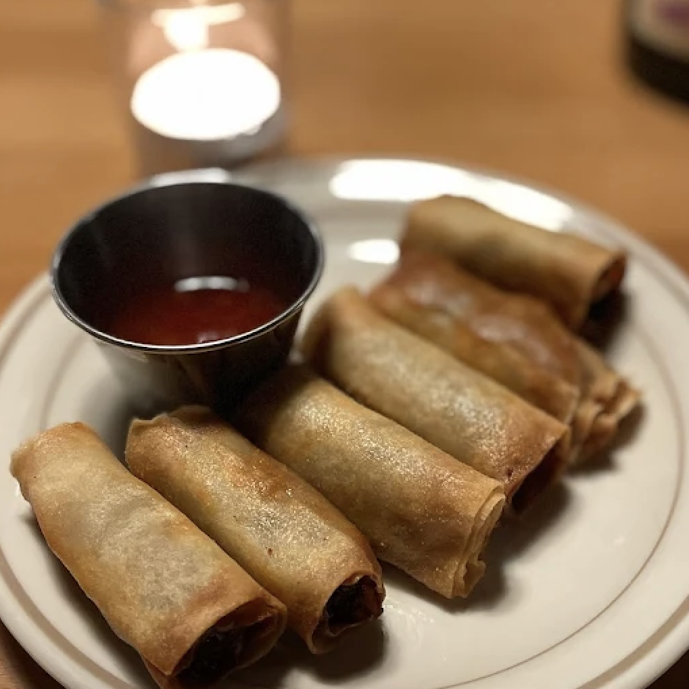
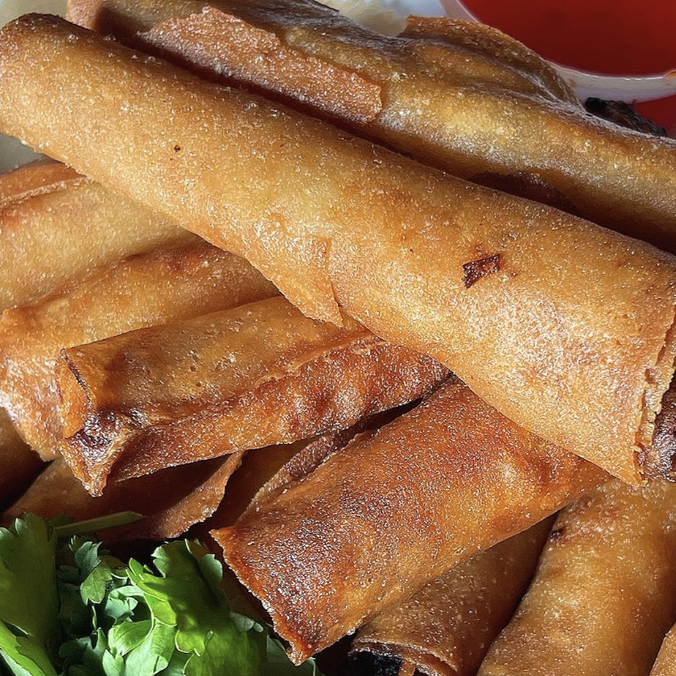

Home
Pangunahing pahina
Why Filipino food?
Bakit pagkaing Pilipino?
About the project
Tungkol sa proyekto
Contact us
Kontakin kami
Filipino Food Finder
Tagahanap ng Pagkaing Pilipino
Your search for "lumpia" had two matches:
Ang hinahanap niyong "lumpia" ay may dalawang nahanap:

